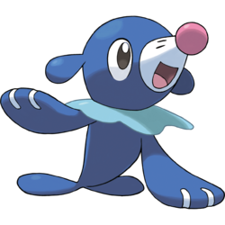
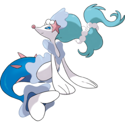

Brionne (Japanese: オシャマリ Osyamari) is a Water-type Pokémon introduced in Generation VII. It evolves from Popplio starting at level 17 and evolves into Primarina starting at level 34.
Biology
Brionne is a light blue, pinniped Pokémon with three ruffle-like growths around its body. The first ruffle is just under its front flippers, while the last is shortly before the tail. The ruffles alternate white and pale blue. Its long ears are made up of three segments that lighten and increase in size towards the tip; the first segment is ovoid, while the latter two are spherical. It has a long, conical snout with a white tip, a spherical pink nose, and large dark eyes with pinkish pupils. Its front flippers are much longer than its tail flippers, although both have white tips. There are three digits on the front flippers. Brionne can create water balloons in a variety of colors. While it normally learns to dance from members of its colony, Brionne can also learn to dance from humans. It works diligently to memorize each dance through imitation and gets excited when it sees a dance it does not know. It is capable of dancing in perfect time with others, even if it's never danced with them before. Large groups of Brionne can be seen dancing together on moonlit nights. Its battle strategy consists of dancing while creating water balloons. The dance confuses the opponent, and during this weakness, Brionne slaps the balloons toward the target where they explode. Only those who have earned its trust can see this Pokémon when it is sad. It will otherwise always act cheerful and never allow its sorrow to show
Facts
Origin
Brionne appears to be based on a sea lion and performers such as Japanese idols, ballerinas and circus clowns.
Name origin
Brionne may come from brio (vivacity of style or performance), sea lion, brine, and ondine (a type of female water nymph or mermaid).
Osyamari may be a combination of オシャレ oshare (fashionable) or おしゃま oshama (precocious young girl), 鞠 mari (ball), and marine.
Evolutive Line
|  |  | |
|---|---|---|
| Popplio | Brionne | Primarina |